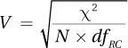
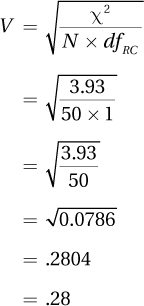
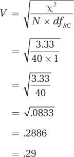

Now that χ2 has been calculated for a chi-square test of independence, it is time to move on to the sixth step of hypothesis testing and interpret the results. To interpret a chi-square test of independence, there are three questions to answer: (1) Was the null hypothesis rejected? (2) If so, what is the direction of the difference? (3) How big is the effect?
593
Let’s use the study by the educational psychologist Dr. Pradesh to see how to answer those questions for a chi-square test of independence. Dr. Pradesh’s study compared the grades, high vs. low, for 50 students who were randomly assigned to read the text either before or after class.
Step 6 Interpret the Results
For Dr. Pradesh’s study, alpha was set at .05, there was 1 degree of freedom, and the critical value of chi-square was 3.841. Dr. Pradesh calculated χ2 = 3.93. Applying the decision rule 3.93 ≥ 3.841, so the null hypothesis is rejected, the alternative hypothesis is accepted, and the results are considered statistically significant. The results can be phrased two ways:
There is a relationship between when a student reads the text and what grade he or she receives in the class.
A statistically significant difference exists in grades between the students who read the text before class vs. those who read the text after class.
Both statements above are true, but neither is satisfying because neither reveals the direction of the difference, whether it is better to read the text before class or after class. With Dr. Pradesh’s study, it is easy to determine the direction of the difference because there are only two groups.
By examining the results in the samples, Dr. Pradesh can draw a conclusion about the direction for the populations. Twenty of the 26 students in the read-before-class group (76.92%) received high grades compared to 12 of the 24 students (50.00%) of the read-after-class group. So, Dr. Pradesh concludes, for the larger population of introductory psychology students at this university, that completing the textbook readings before class leads to a better grade outcome than completing the reading after class.
APA Format
The results are reported in APA format for the chi-square test of independence the same way they are for a chi-square goodness-of-fit test. Here are the six pieces of information for the read before class vs. read after class study:
χ2(1, N = 50) = 3.93, p < .05
χ2 indicates that the test statistic was a chi-square.
1 gives the degrees of freedom.
N = 50 tells how many cases there were.
3.93 is the value of the test statistic.
.05 provides information about the alpha level selected.
And, p < .05 means that the null hypothesis was rejected.
594
Determining the size of the effect for a chi-square test of independence involves transforming the chi-square value into Cramer’s V, a statistic that is a lot like a Pearson r:
Cramer’s V ranges from 0 to 1.
As Cramer’s V gets closer to 1, the effect is stronger.
As Cramer’s V gets closer to 0, the effect is weaker.
The formula for calculating Cramer’s V is shown in Equation 15.7.

where V = Cramer’s V
χ2 = chi-square value, calculated via Equation 15.3
N = total number of cases in the contingency table
dfRC = (R – 1) or (C – 1), whichever is smaller (R = number of rows in the contingency table; C = number of columns in the contingency table)
Here’s how to calculate V for the read before class vs. read after class study. It is already known that χ2 = 3.93 and N = 50. To calculate V for this equation, one needs to know the number of rows (2) and the number of columns (2) in the contingency table. The degrees of freedom for Equation 15.7 are either R – 1, which is 2 – 1, or C – 1, which is also 2 – 1, whichever is smaller. Both are the same, so dfRC = 1.

Cramer’s V for the text-reading data is .28. When there is only 1 degree of freedom, as here, Cramer’s V is equivalent to a Pearson r. So, Dr. Pradesh could say that there is a .28 correlation between the independent variable (when the text is read) and the dependent variable (high grade or low grade). This is a medium-strength correlation. Guidelines for interpreting Cramer’s V are given in Table 15.12.
When dfRC = 1, Cramer’s V is interpreted like a Pearson r in terms of what is a small, medium, and large effect size.
As dfRC increases, the criteria for considering an effect size meaningful become more lenient.
For the read before class vs. read after class study, the effect, V = .28, would be considered a medium one.
595
Here is Dr. Pradesh’s four-point interpretation. In it she (1) tells what the study was about, (2) gives the results, (3) explains what they mean, and (4) makes suggestions for future research.
This study investigated whether completing readings before or after class has an impact on the grade a student receives. Fifty students in introductory psychology classes were randomly assigned to complete the readings before class or after it. Reading the text before attending class resulted in a significantly higher percentage of students receiving high grades: 77% vs. 50%, χ2(1, N = 50) = 3.93, p < .05. The impact on grades of when the reading is completed is more than small, but less than large. To increase the generalizability of results and certainty about the size of the effect, the study should be replicated in courses other than psychology and at other universities.
(Though the results do sound reasonable, please be aware that these data were manufactured for this example.)
For an example demonstrating how to interpret the chi-square test of independence results that are not statistically significant, a return to Mr. Conaway’s study of the relationship between the frequency of receiving unconditional positive regard and being a behavior problem is in order. In that study, Mr. Conaway, an elementary school teacher, “measured” 40 children. The grouping variable was how frequently the child received unconditional positive regard (frequently, sometimes, or rarely) and the dependent variable was whether the child’s teacher rated him or her as a behavior problem (yes or no). Alpha was set at .05, there were 2 degrees of freedom, and the critical value of chi-square was 5.991. Using Equation 15.3, Mr. Conaway found χ2 = 3.33.
Was the null hypothesis rejected? Here is the decision rule:
If χ2 ≥ 5.991, reject H0.
If χ2 < 5.991, fail to reject H0.
596
3.33 < 5.991, so the results fall in the common zone (see Figure 15.5), the null hypothesis is not rejected, and the results are called “not statistically significant.” There is not enough evidence to conclude that a relationship exists between the frequency with which elementary school children received unconditional positive regard at home and their being a behavior problem. Alternatively, one could say that there is not enough evidence to conclude that the rate of behavior problems differs among children who receive unconditional positive regard frequently, sometimes, or rarely. That is, the conclusion could be stated in either relationship test terms or difference test terms.
Direction of the difference. Because not enough evidence is available to say that a difference exists, there is no need to comment on the direction of the difference.
APA format. In APA format, these results would be written as
χ2(2, N = 40) = 3.33, p > .05
χ2 indicates that the statistic calculated is a chi-square value.
2 indicates that there are 2 degrees of freedom.
N = 40 tells the sample size.
3.33 is the chi-square value found in the sample.
.05 indicates that alpha was set at .05.
p > .05 indicates that the results fell in the common zone, that the null hypothesis was not rejected.
How big is the effect? Cramer’s V, the effect size for a chi-square test of independence, should be calculated even when results are not statistically significant. Doing so allows a researcher to evaluate the likelihood of a Type II error. To calculate V, one needs the observed chi-square value, sample size, and degrees of freedom (Equation 15.7). For his data, Mr. Conaway already knows χ2 = 3.33 and N = 40. To find dfRC , he needs to subtract 1 from the number of rows or 1 from the number of columns, whichever is smaller. There are fewer columns (two) than rows (three), so dfRC = 2 – 1 = 1. Next, he plugs the numbers into Equation 15.7 to calculate V:
597

According to Table 15.13, V = .29 is a medium effect size. This medium effect conflicts with the fact that there is insufficient evidence for an effect. In such situations, the first explanation that comes to mind is the possibility of a Type II error. Perhaps there really is an effect and, due to sampling error, Mr. Conaway failed to find it. This could have happened because the study was underpowered. To determine if an effect does exist, the study should be replicated with a larger sample size.
Putting it all together. Here is Mr. Conaway’s four-point interpretation:
Data from 40 elementary school students were collected to see if the frequency with which they received unconditional positive regard at home was related to their being considered a behavior problem at school. Though the likelihood of being a behavior problem increased as the likelihood of receiving unconditional positive regard decreased, there was not sufficient evidence to conclude that a relationship exists between these two variables [χ2(2, N = 40) = 3.33, p > .05]. Failure to find an effect could have been due to the small sample size. In order to have adequate power to determine if a relationship exists, it would be a good idea to replicate this study with a larger sample size.
15.10 If χ2 = 4.76, df = 1, N = 36, and α = .05, write the results in APA format.
15.11 If N = 45, χ2 = 6.78, and dfRC = 2, calculate V.
15.12 A human factors psychologist randomly assigned volunteers to drive on a twisty mountain road in a driving simulator. The control group drove in a normal car with a dashboard. The experimental group drove in a car with a heads-up display, where the dashboard information was projected onto the windshield. The dependent variable was whether the group crashed the car or not. Given the contingency table below, χ2(1, N = 180) = 5.27, p < .05, and Cramer’s V = .17, write a four-point interpretation:
| Good Outcome: Did Not Crash | Bad Outcome: Crashed | |
| Control Group | 42 | 43 |
| Experimental Group | 63 | 32 |